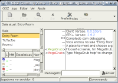
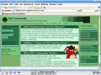

GGZ Gaming Zone Overview
Revision: 0.1Date: 26.02.2005
Author: Josef Spillner <josef at ggzgamingzone dot org>
This information aims at people who have never heard of GGZ and want to get a first impression of the project. It is neither complete nor does it contain any information for developers or server hosters - please refer to the specialized guides for those topics.
In the beginning...
There are a lot of free games available today. Many of them even provide multiplayer features such as connecting to a server, or even finding open games on a metaserver. But only a few of them offer more than that. This is where GGZ comes into play. It makes it easy to achieve network gaming integration on various aspects. Some games only use parts of the GGZ infrastructure, others use as much as possible.
The software of which GGZ consists will be described in the next chapter. It should be understood that while the project provides several games, it also provides a platform for other game developers to build on. GGZ games are currently mostly focused on board and card games, but there are no limits in what kind of game can be supported.
The software that makes GGZ
The first impression players get from GGZ is usually from the so-called core clients, which can be compared to chat clients with the ability to play some games. There are currently core clients for the unix command line, Gtk+, KDE and GNOME desktop environments, and SDL.

Additionally, it is possible to integrate game launching mechanisms into traditional chat or IM clients, into quick launchers and even into the games themselves.

The games come in many flavours, some of which will be described here. For each game, there is a protocol, for which several servers or clients might exist. Usually, there is one server, and then one or two clients. The clients are compatible, but their features differ. For instance, one might support single player games too, while the other one can only be played on a GGZ server. Other distinguishing properties are support for player options (displaying highscores and player lists, booting players), update of themes or levels from the internet, resuming cancelled games, spectator capabilities, configurable AI players and game replay.

Another major component is the GGZ server, its database and the web frontend, for which a reference implementation named GGZ Community is permanently available to players all around the world. A chatbot is active on the server as well and answers questions, and sometimes even likes to play a game.

Using all the software in combination, it is possible to run tournaments, organize individual matches with preferred opponents, manage teams, control player karma, and get overall good rankings and highscores.
Getting into it
Anyone interested in the project is encouraged to subscribe to the really low-traffic ggz-announce mailing list. Only the most important information is sent there, about twice a year. Make sure you don't miss this information!
People who just want to check out the games and community should look for packages made available for their operating system, or compile GGZ by hand based on information from the QuickStart.GGZ and README.GGZ files placed into each package.
Developers should join the ggz-dev mailing list, and talk about their plans. There are lots of projects going on, not all of them are nicely documented yet, so asking is a good way of avoiding duplicate work.
Packagers and server hosters should subscribe to the ggz-servers list, because planned updates are announced at this list, as are general administrative problems and compatibility issues.
Further information
Here are some URLs which might guide new users into the right direction.
- GGZ forums: https://www.ggzcommunity.org/forums/
- GGZ mailing lists: https://mail.ggzgamingzone.org/
- GGZ documentation page: http://www.ggzgamingzone.org/docs.php
- Developer activity: http://cia.navi.cx/stats/project/ggz